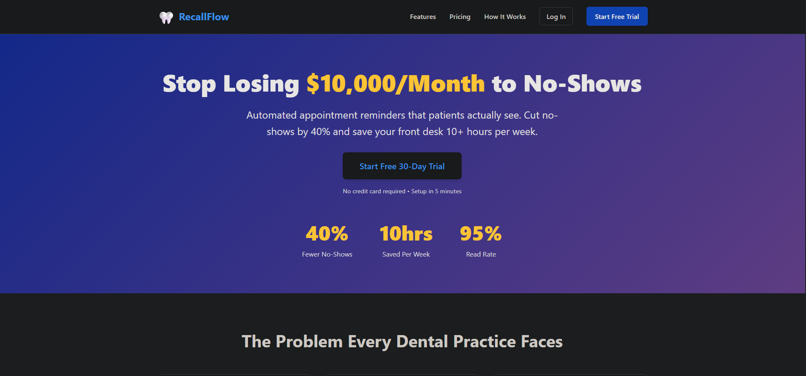
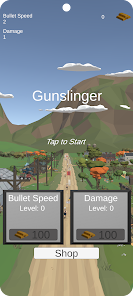
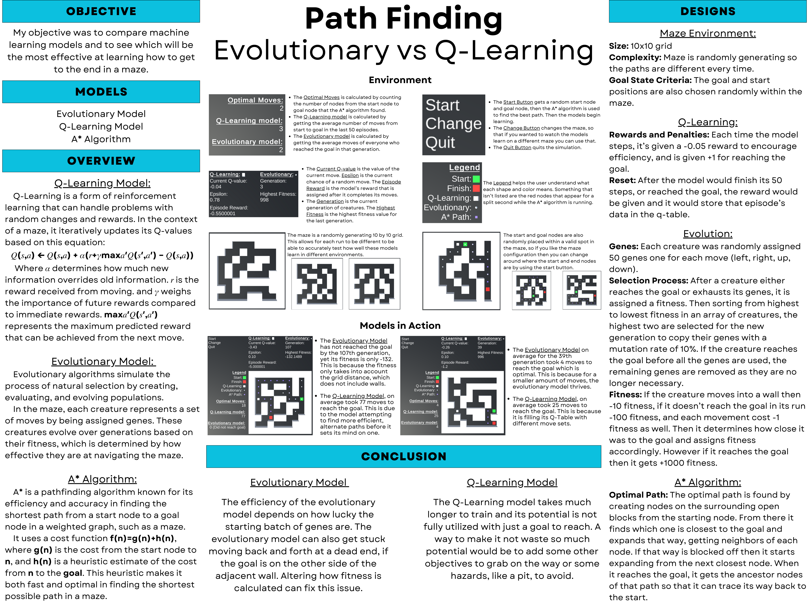
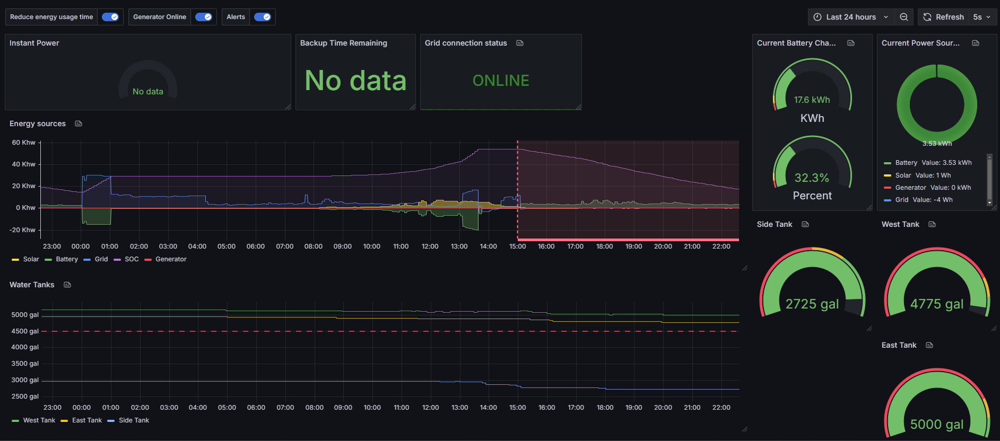
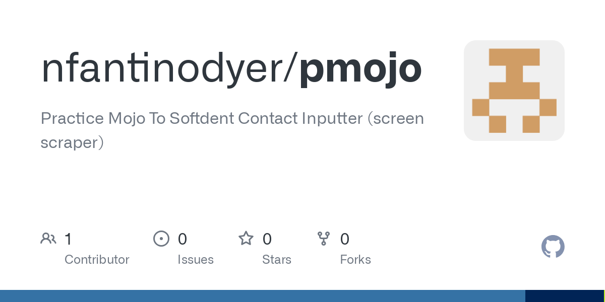

Nicholas Fantino-Dyer (He/Him)
Automation Engineer and recent MSCS graduate combining hands-on IT infrastructure experience with custom software development. Specialized in using Python and SQL to replace manual workflows with automated data pipelines. Currently completing AWS LLM and Kubernetes certifications to deepen my cloud architecture and containerization expertise.
Achievements
I earned first place in my Senior Capstone Project by creating a Unity-based maze simulation that used Q-Learning and Evolutionary models for optimal pathfinding, and was also honored on the 2024 Dean's Honor Roll. As an ERP Developer at Pacific Technology, I directed the large-scale ERP migration from Ellucian Banner 8 to Banner 9 and architected an AI-based automation solution to translate legacy COBOL scripts into modern MySQL data pipelines, improving processing efficiency by over 25%. I developed and published the mobile game Gunslinger in Unity, available on Google Play with over 1,000 downloads. I integrated Cloudflare Workers with Grafana to automate data collection and build real-time performance dashboards. My research on Linux vs. Windows efficiency used Intel PCM and Python to uncover anomalies and confirm Linux's superior performance. I designed a custom MIPS instruction to count non-occurrences in an array, improving CPU functionality. I built Python automation scripts for Oak Meadow Dental Center to bridge SoftDent and Practice Mojo, saving staff over 150 hours annually. I engineered OpenDrop, a cross-platform file sharing application deployed on the Apple App Store, Google Play Store, and Microsoft Partner Center.
Experience
IT Consultant
Silicon Valley Dental, Santa Clara, CA (May 2025 – February 2026)
- Architected a virtualization strategy under strict budget constraints, utilizing Hyper-V to host a legacy Windows 7 dental server environment on a single modern workstation.
- Executed fleet-wide OS and software upgrades on deeply aged legacy hardware, extending equipment lifecycle while bringing the clinic up to modern security standards.
- Overhauled the clinic's network infrastructure, redesigning DNS/DHCP scopes and configuring switches and routers to optimize server communication and reliability.
- Managed domain migrations and Active Directory setup, transitioning from Windows Server 2012 R2 to 2022.
IT Consultant
California Family Dental, Mountain View, CA (October 2025 – December 2025)
- Led end-to-end hardware procurement and deployment, setting up new workstations, establishing the clinic's local network, and configuring server cloning and backup protocols.
- Performed Active Directory domain configuration and executed a full server upgrade from Windows Server 2016 to 2022.
- Developed and delivered hands-on user enablement training for staff with minimal technical background, covering secure web browsing, malware avoidance, and basic application operations.
Project Manager / ERP Developer
Pacific Technology, Stockton, CA (April 2023 – December 2023)
- Directed the large-scale ERP migration from Ellucian Banner 8 to 9, collaborating with cross-functional teams to translate user needs into technical requirements and ensuring a seamless transition with minimal business disruption.
- Architected and deployed an AI-based automation solution to translate legacy COBOL scripts into modern MySQL data pipelines, improving processing efficiency by over 25%.
- Authored comprehensive technical documentation and change management plans, empowering non-technical stakeholders to independently navigate the upgraded systems.
IT Consultant & Dental Assistant
Oak Meadow Dental Center, Los Gatos, CA (June 2016 – Present)
- Served as the long-term IT administrator, managing all system updates, vendor coordination, and general hardware/software support for the practice.
- Developed a custom Python automation script to bridge the data gap between Practice Mojo and SoftDent software, eliminating manual data entry and streamlining a critical daily workflow.
- Assist clinical staff with daily operations and lead the onboarding and training of new employees on clinical procedures and technical systems.
Education
Santa Clara University (December 2025)
MS, Computer Science, 3.66 GPA
University of the Pacific (May 2024)
BS, Computer Science, 3.03 GPA
Projects
OpenDrop
Cross-platform file sharing between mobile and desktop over WiFi, cloud, or Bluetooth.

RecallFlow
SaaS platform for automated dental appointment reminders.

Gunslinger
Arcade shooter with 1,000+ downloads on Google Play.

Maze Learning Simulation
Comparing Q-Learning vs Evolutionary models for pathfinding.

Cloudflare Worker Automation
Integrated Cloudflare Workers with Grafana for real-time dashboards.

Clinic Automation
Screen scraper program to automate repetitive data entry.
![[ SQL ChatBot Screenshot ]](images/sqlchatbot.png)
SQL ChatBot
Natural language interface for database queries using AI.
![[ Linux vs Windows Screenshot ]](images/CPUEnergyEstimation.png)
Linux vs Windows Energy Efficiency
Analyzed energy efficiency of CPUs in Linux and Windows.
![[ AI Creating App Screenshot ]](images/aicreating.png)
AI Creating App
Python application for AI-powered content generation.
![[ Rust OS Screenshot ]](images/rustos.png)
Rust OS
Operating system kernel development in Rust.
![[ UDP Payload Screenshot ]](images/udppayload.png)
UDP Payload
Network programming project implementing UDP communication.
![[ Patient Eligibility Screenshot ]](images/patienteligibility.png)
Patient Eligibility
Automated patient insurance eligibility verification system.
![[ MIPS to Binary Screenshot ]](images/mipstobinary.png)
MIPS to Binary Converter
Assembler that converts MIPS assembly to machine code.
![[ Words Screenshot ]](images/words.png)
Words
Anagram and word search tool for finding possible words.